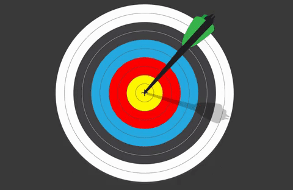

After decades of steady decline, the number of people who suffer from hunger – as measured by the prevalence of undernourishment – began to slowly increase again in 2015. Today, more than 820 million people regularly go to bed hungry, of whom about 135 million suffer from acute hunger largely due to man-made conflicts, climate change and economic downturns. The COVID-19 pandemic could now double that number, putting an additional 130 million people at risk of suffering acute hunger by the end of 2020, according to the World Food Programme.
With more than a quarter of a billion people potentially at the brink of starvation, swift action needs to be taken to provide food and humanitarian relief to the most at-risk regions.
At the same time, a profound change of the global food and agriculture system is needed if we are to nourish the more than 820 million people who are hungry and the additional 2 billion people the world will have by 2050. Increasing agricultural productivity and sustainable food production are crucial to help alleviate the perils of hunger.
TARGETS :

By 2030, end hunger and ensure access by all people, in particular the poor and people in vulnerable situations, including infants, to safe, nutritious and sufficient food all year round.
By 2030, end all forms of malnutrition, including achieving, by 2025, the internationally agreed targets on stunting and wasting in children under 5 years of age, and address the nutritional needs of adolescent girls, pregnant and lactating women and older persons.
By 2030, double the agricultural productivity and incomes of small-scale food producers, in particular women, indigenous peoples, family farmers, pastoralists and fishers, including through secure and equal access to land, other productive resources and inputs, knowledge, financial services, markets and opportunities for value addition and non-farm employment.
By 2030, ensure sustainable food production systems and implement resilient agricultural practices that increase productivity and production, that help maintain ecosystems, that strengthen capacity for adaptation to climate change, extreme weather, drought, flooding and other disasters and that progressively improve land and soil quality.
By 2020, maintain the genetic diversity of seeds, cultivated plants and farmed and domesticated animals and their related wild species, including through soundly managed and diversified seed and plant banks at the national, regional and international levels, and promote access to and fair and equitable sharing of benefits arising from the utilization of genetic resources and associated traditional knowledge, as internationally agreed.
Increase investment, including through enhanced international cooperation, in rural infrastructure, agricultural research and extension services, technology development and plant and livestock gene banks in order to enhance agricultural productive capacity in developing countries, in particular least developed countries.
Correct and prevent trade restrictions and distortions in world agricultural markets, including through the parallel elimination of all forms of agricultural export subsidies and all export measures with equivalent effect, in accordance with the mandate of the Doha Development Round.
Adopt measures to ensure the proper functioning of food commodity markets and their derivatives and facilitate timely access to market information, including on food reserves, in order to help limit extreme food price volatility.